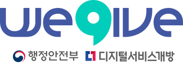

now forward deployed, from a team's request to production
백엔드 6년 차 개발자입니다. 지금은 현업 가까이에서 문제를 듣고, 만들고, 사용하게 만드는 Forward Deployed 역할까지 맡고 있습니다. 유진그룹에 AI 서비스를 도입해 법무, 경영, 증권, 보안 분야의 요청을 에이전트와 MCP 서버로 전달했습니다. 그 전에는 일 1,000건 이상의 주문을 처리하는 커머스에서 성능과 정합성을 다졌습니다.
I am a backend engineer in my sixth year. These days I also work forward deployed: I sit next to business teams, listen to the problem, build, and stay until it is used. I brought an AI service to Eugene Group and delivered agents and MCP servers for legal, management, securities and security work. Before that I learned performance and data integrity on an e-commerce store handling over 1,000 orders a day.
What I'm good at
성능 개선Performance
느린 원인을 수치로 먼저 찾은 뒤 구조를 바꿉니다. e-HR의 핵심 화면 응답을 18초에서 1초로, 폴더몰의 Best 상품 조회를 10초에서 1초로 줄였습니다.
I measure where it is slow before changing the structure. I cut key screen response in e-HR from 18 s to 1 s, and best-seller listing at FOLDER MALL from 10 s to 1 s.
돈과 데이터가 어긋나지 않게 만듭니다. 일반 결제와 포인트가 섞인 부분 교환·환불에서 결제 수단별 환불 금액과 남은 포인트를 다시 계산하는 정산 흐름을 설계해 4개국 동시 출시했고, 레거시 회원 약 30만 건도 새 플랫폼으로 이관했습니다.
I make sure money and data never drift apart. I designed settlement for partial exchanges and refunds of card-and-points payments, recalculating refunds per payment method and the remaining points, and launched in 4 countries at once, and migrated about 300,000 legacy members to a new platform.
AWS와 사내망이 직접 통신하지 않도록 DMZ 중계 게이트웨이를 거쳐 e-HR API를 연결했고, 단일 토큰 인증을 OAuth 2.0/JWT로 바꿔 모든 호출에 호출자 사번을 남겼습니다. e-HR에서는 SSO 통합 로그인 개발의 PL을 맡았습니다.
I connected e-HR APIs through a DMZ relay gateway so AWS never talks to the internal network directly, and replaced a single shared token with OAuth 2.0/JWT so every call carries the caller's employee ID. On e-HR, I was project leader for single sign-on development.
요청과 설계를 덜어 내 빠르게 전달Cutting scope and design, shipping fast
요청을 그대로 만들지 않고 실제로 필요한 것과 제약을 먼저 확인합니다. "투자심의를 AI로 대체"는 AI 사전 심의와 경영진 결재의 두 단계로 합의했고, 공정거래 준법 에이전트는 요청 메일부터 배포까지 8일이 걸렸습니다. 투자심의 엔진은 한 달 넘게 만든 검증 코드가 오히려 양식만 채우게 만드는 것을 실측(v2 커밋 111건 중 수정 73건)으로 확인하고 걷어내, 코드를 6,300줄에서 1,615줄로 줄였습니다.
I do not build requests as stated; I first check what is actually needed and what the constraints are. "Replace the investment review with AI" became AI pre-review plus management approval, and the fair-trade compliance agent shipped 8 days after the request email. In the investment review engine, measurements (73 fixes among 111 v2 commits) showed a month of validation code was pushing the model to fill in forms, so I removed it and cut the code from 6,300 to 1,615 lines.
SaaS AI 서비스를 그룹에 도입하고, 현업 팀의 요청을 에이전트로 만들어 전달하고, 실제로 사용하게 만드는 일까지 맡았습니다.
I brought a SaaS AI service to the group, turned requests from business teams into agents, and stayed until people actually used them.
법무, 경영, 증권, 보안 분야의 요청을 MCP 서버 12개로 만들어 전달. 공정거래 준법 에이전트는 요청 메일부터 배포까지 8일
AWS Lambda MCP 서버가 DMZ 중계 게이트웨이를 거쳐 e-HR REST API를 호출하고, OAuth 2.0/JWT로 호출자 사번을 모든 도구 호출에 주입
사용자 10명을 인터뷰해 쓰지 않는 이유가 토큰 한도와 읽히지 않는 안내 메일임을 확인하고, 교육 4회와 뉴스레터로 정착을 지원
누적 가입자 337 → 1,130명, 월 사용자 43 → 356명, 사용 계열사 5 → 17곳
월 1회 이상 사용된 에이전트·워크플로우 19 → 91개, 에이전트 활용 비율 8% → 28%(2026년 10월)
Turned requests in legal, management, securities and security into 12 MCP servers. The fair-trade compliance agent shipped 8 days after the request email
A Lambda MCP server calls e-HR REST APIs through a DMZ relay gateway, with OAuth 2.0/JWT putting the caller's employee ID on every tool call
Interviewed 10 users and found the blockers were the token limit and announcement emails nobody read, then supported adoption with 4 training sessions and a newsletter
Sign-ups 337 → 1,130, monthly users 43 → 356, affiliates using it 5 → 17
Agents and workflows used at least once a month 19 → 91, usage through agents 8% → 28% (October 2026)
PythonMCPAWS LambdaAPI GatewayOAuth 2.0
그룹 AI 프로젝트의 하위 과제, 가장 큰 프로젝트Part of the group AI project, its largest piece
2026.04 — 진행 중present/ 엔진 설계와 구현, 2인 팀engine design and build, team of 2
임원 투자심의를 AI로 대체해 달라는 요청에서 시작했습니다. 같은 자료에서 총점이 49점과 43점으로 갈리던 문제를 엔진의 구조로 풀었습니다.
It began as a request to replace the executive investment review with AI. I solved the same documents scoring 49 and 43 through the structure of the engine.
현업 팀과 리뷰 6회. "AI로 대체"를 AI 사전 심의와 경영진 결재의 두 단계로 합의
몇 주에서 몇 달 걸리던 심의 준비 앞단에 한 건당 10~40분의 사전검토 리포트를 제공. 2026년 9월 현업에 오픈
서버는 LLM을 부르지 않는 MCP 엔진. 다섯 관점은 ID가 붙은 근거 원장만 인용
엔진을 5세대에 걸쳐 재설계해 안건당 비용 62% 절감, 코드 6,300줄 → 1,615줄
AX REAL 2026에서 약 300명 앞에 발표
6 reviews with the requesting team. "Replace it with AI" became AI pre-review plus management approval
Review preparation used to take weeks to months. The agent now gives a pre-review report in 10 to 40 minutes per proposal, open to the team since September 2026
An MCP engine where the server never calls an LLM. The five viewpoints cite only an evidence ledger with IDs
Redesigned the engine over 5 generations, cutting cost per proposal by 62% and code from 6,300 lines to 1,615
Presented at AX REAL 2026 to about 300 people
PythonMCPAWS LambdaDynamoDBFastAPI
2023.06 — 진행 중present/ 단독 운영, SSO PLsole operator, SSO lead
2018년부터 쌓인 Spring·Oracle 레거시 인사 시스템을 단독 운영하며 빌드·배포 체계와 성능, 개인정보 처리를 현대화했습니다.
I run a Spring and Oracle HR system, built up since 2018, on my own, and modernized its build and deploy, performance and personal data handling.
SVN을 GitLab으로 옮기고 Gradle 빌드를 도입, 운영서버와 저장소의 차이 900여 건을 정합화한 뒤 Jenkins로 개발서버 자동 배포와 운영용 WAR 자동 빌드 구성, 기본값 섞인 WAR·업로드 폴더 덮어쓰기를 막는 빌드 가드 추가
동적 SQL을 정적 SQL로 바꿔 하드파싱을 없애고, 반복 조회를 캐시로 돌리고, 접속 로그를 비동기로 분리해 핵심 화면 응답 18초 → 1초 이내
한 건씩 차례로 처리하던 일괄 결재를 최대 5건 동시 처리로 전환
연말정산을 비롯한 법정 패치 20회 이상 적용, 개인정보 마스킹과 해제 로그 공통화, SSO 통합 로그인 개발 PL
운영 JVM OutOfMemoryError 장애의 원인을 전 사원·전 기간을 메모리에 올리던 조회로 특정하고, 사번 일치·월 6자리 조건으로 막아 재발 방지
Moved SVN to GitLab, introduced a Gradle build, reconciled 900+ files that had drifted between production and the repository, then set up Jenkins for automatic development-server deploys and production WAR builds, with build guards against default-config WARs and overwritten upload folders
Turned dynamic SQL into static SQL to stop hard parsing, cached repeated lookups and moved access logging off the request path, cutting key screen response from 18 s to under 1 s
Bulk approvals handled one at a time now run up to 5 at once
Applied 20+ statutory patches including year-end tax settlement, unified personal data masking and unmask logging, and led single sign-on development
Traced a production JVM OutOfMemoryError outage to a lookup that loaded every employee and period into memory, and prevented a repeat by requiring an exact ID and a 6-digit month
JavaSpringOracleGradleJenkinsJEUS
포비즈코리아Forbiz Korea
2020.12 — 2023.06
기업형 이커머스 솔루션 회사, 커머스개발팀 사원에서 대리
An enterprise e-commerce solutions company. Commerce Development Team, from staff to assistant manager
입사한 이유: 대규모 주문과 결제 트래픽을 직접 다루며 트랜잭션과 성능 설계를 익히고 싶었습니다.
Why I joined: I wanted to learn transaction and performance design by handling large order and payment traffic directly.
백엔드 개발자로 쇼핑몰 5곳의 구축과 운영을 맡아 주문, 결제, 검색, 데이터 이관을 개발했습니다.
As a backend developer I built and ran 5 online stores, working on orders, payments, search and data migration.
2023.02 — 2023.05 / 백엔드 설계와 개발 PL, 개발자 3명, 4개월backend design and development lead, 3 developers, 4 months
스마일게이트의 공식 굿즈샵을 여러 나라에 여는 프로젝트였습니다. 국가별 언어, 통화, 결제를 담는 구조를 설계하고, 결제 프로세스의 복합 결제와 환불·교환 기능을 개발했습니다.
A project to open Smilegate's official goods store in several countries. I designed the structure for per-country language, currency and payment, and built mixed payments, refunds and exchanges in the payment flow.
일반 결제와 포인트를 섞은 복합 결제와 부분 교환·환불 정산을 설계, 부분 클레임 때 남은 금액·포인트 재계산
국가·언어·통화·결제수단을 데이터로 분리해 국가 추가를 코드 수정 없이 설정으로 처리, 4개월 만에 4개국·5개 언어 동시 출시
장바구니의 배송 국가 선택, 주문과 교환·반품·환불 클레임 프로세스 개발
국가별 Elasticsearch 인덱스로 현지 언어 검색, 국내·해외 결제(이니시스, 엑심베이), EMS, 복지포인트, SNS 로그인 5종 연동
Designed mixed card-and-points payments and partial exchange and refund settlement, recalculating the remaining amount and points on partial claims
Separated country, language, currency and payment method into data so a new country is configuration, not code, and launched in 4 countries and 5 languages at once in 4 months
Built country selection in the cart and the order, exchange, return and refund claim flows
Per-country Elasticsearch indexes for local-language search; integrated domestic and overseas payments (Inicis, Eximbay), EMS, welfare points and 5 social logins
PHPCodeIgniterMySQL

2022.10 — 2023.01 / 마이크로사이트·제휴 관리 메인, 개발자 3명lead on microsites and partner management, 3 developers
유리병 이유식 브랜드의 쇼핑몰을 새 플랫폼으로 구축한 프로젝트입니다. 레거시 회원 데이터 이관과 이유식 일정 배송 기능 개발을 맡았습니다.
A project to build a new platform for a glass-jar baby food brand's store. I owned the migration of legacy data and built scheduled delivery for the baby food plans.
10년 넘게 쌓인 레거시 회원 약 30만 건을 새 플랫폼으로 이관
요일·식단·월령에 따라 매일 달라지는 발송을 일자 × 상품 × 고객 구조로 관리하는 일정 배송 개발
Elasticsearch 검색 연동, SNS 로그인과 공유 연동
Migrated about 300,000 legacy members, built up over 10+ years, to the new platform
Built scheduled delivery that manages daily-changing shipments as a date × product × customer structure
Integrated Elasticsearch search, social login and sharing
PHPMySQLElasticsearch
2021.03 — 2021.12 / 커머스 코어 단독 구현, 개발자 2명commerce core on my own, 2 developers
이랜드의 오프라인 슈즈 편집숍 폴더(FOLDER)의 공식 온라인 스토어입니다. 구축 6개월과 운영 1년 10개월 동안 하루 평균 1,000건 이상의 주문을 다루며 성능 개선, 검색, 커뮤니티 기능 개발을 맡았습니다.
The official online store of FOLDER, E-Land's offline multi-brand shoe shop. Over 6 months of build and 22 months of operations it handled more than 1,000 orders a day, and I worked on performance, search and community features.
요청마다 돌던 실시간 집계를 배치 사전 집계와 별도 테이블로 분리하고 인덱스를 보강해 Best 상품 조회 10초 → 1초 이내
Elasticsearch로 상품 검색과 최근 본 상품 기록을 만들고 관리자 검색까지 확장
폴더 SNS(FolderingChannel)의 팔로우, UGC 신고·차단, 후기·평점 관리 단독 개발, 이벤트 기능 메인 담당
Cron 운영 배치와 Jenkins 자동·수동 배포 구성
Moved live aggregation into a batch and a separate table and added missing indexes, cutting best-seller listing from 10 s to under 1 s
Built product search and recently viewed products on Elasticsearch and extended it to admin search
Built follows, reporting and blocking, and review management for the FOLDER social feed (FolderingChannel) on my own, and led event features
Set up cron operations batches and automatic and manual Jenkins deploys
PHPMySQLElasticsearchJenkins
Talks & activities
Oct 2026
MCP를 오케스트레이터로 활용한 투자심의 에이전트An investment review agent with MCP as the orchestrator
AX REAL 2026 컨퍼런스 발표. 청중 약 300명 앞에서 엔진과 LLM의 역할 분리, 근거 반려 설계를 시연과 함께 공유했습니다.
Talk at the AX REAL 2026 conference. I showed about 300 people how the engine and the LLM split the work and how answers without evidence get rejected, with a live demo.
#talk#mcp#agent
Jul, Oct 2026
그룹 전사 AI 활용 교육Group-wide AI training
2026년 7월과 10월에 2회씩, 모두 4회를 직접 강의했습니다. 7월 교육에서 수강생 편차가 크다는 피드백을 받아, 10월 교육은 각자 자기 업무의 에이전트를 만들어 발표하는 워크숍으로 바꿨습니다.
I taught four sessions myself, two in July 2026 and two in October. After feedback from July that skill levels varied widely, I rebuilt the October round as a workshop where each person builds and presents an agent for their own work.
#teaching#workshop
Jun — Aug 2026
톡툰, 카카오톡 대화를 AI 웹툰으로 바꾸는 서비스TalkToon, turning KakaoTalk chats into AI webtoons
AI CHAMPION 대회 100팀 선발 진출. 백엔드와 AI 파이프라인의 설계와 구현을 맡았습니다.
Selected among the top 100 teams at the AI CHAMPION competition. I designed and built the backend and the AI pipeline.
#competition#ai-pipeline
2026
기업 데이터 접근성 향상을 위한 자기교정 Text-to-SQL 프레임워크A self-correcting Text-to-SQL framework for enterprise data access
한국IT서비스학회 학술대회 게재, 제1저자. 자기교정 루프를 설계하고 실험했습니다.
Published at the Korea Society of IT Services conference as first author. I designed and tested the self-correction loop.
#paper#text-to-sql
Jan — Jun 2021
SoftSquared Server Session 1:1 멘토1:1 mentor, SoftSquared Server Session
서버 개발자 교육 과정에서 수강생을 1:1로 가르쳤습니다.
I taught trainees one to one in a server developer course.
#mentoring#teaching
Skills & tools
AI 연동, 백엔드 개발, 인증 설계, 성능 최적화
AI integration, backend development, auth design, performance tuning
AI
MCPLangGraphLangChainRAGLLM evaluation
Languages
PythonJavaPHPJavaScript
Frameworks
SpringJSPFastAPICodeIgniter
Data
OracleMySQLElasticsearch
Infra & tooling
AWSJenkinsLinuxGitOAuth 2.0 · JWT
Education
2025 — 2026
국민대학교 소프트웨어융합대학원 인공지능전공 석사
2021 — 2023
한국방송통신대학교 컴퓨터과학과 학사
2017 — 2021
여주대학교 컴퓨터정보과 전문학사
2025 — 2026
Kookmin University, Graduate School of Software Convergence M.S. in Artificial Intelligence
2021 — 2023
Korea National Open University B.S. in Computer Science
2017 — 2021
Yeoju Institute of Technology Associate degree in Computer Information
Certifications
2026.09
정보처리기사 한국산업인력공단
2022.12
AWS Certified Cloud Practitioner Amazon Web Services
2020.09 — 2020.11
SoftSquared 10기 Server Session 서버 개발 교육 과정 수료
2026.09
Engineer Information Processing national certification, HRD Korea
2022.12
AWS Certified Cloud Practitioner Amazon Web Services
2020.09 — 2020.11
SoftSquared Server Session, 10th cohort server development course, completed


 MCP
MCP LangGraph
LangGraph LangChain
LangChain MySQL
MySQL